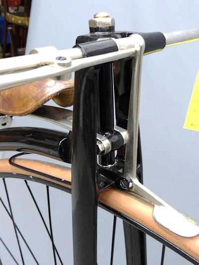

Photo d'un Grand-bi Columbia Expert de 1884
Source : http://sterba-bike.cz superbe site à visiter absolument.
Si nous savons que Thomas Stevens fit le tour du monde en grand-bi de la marque Columbia ( de la Pope Manufacturing Company ), en revanche établir sur quel modèle, Columbia Standard ou Colombia Expert ne fut pas aussi simple. Nous apportons ci-dessous la réponse même !
Sur quelle machine Thomas Stevens fit-il son tour du monde ? Ou plus exactement sur quelles machines...
Qu'il s'agisse d'un grand-bi est une chose établie. D'abord il le dit lui-même, ensuite il y a des articles de journaux publiés avant son départ qui l'indiquent, il y a les dessins qui illustrent l'édition originale de Around the World on a Bicycle, il y a des photos prises à son retour à San Francisco après son périple.
Il est également établi qu'il s'agissait d'un grand-bi de marque Columbia ( marque de la Pope Manufacturing Company ) ; là encore les journaux le signalaient, et Thomas Stevens lui-même - à seulement 2 reprises dans son ouvrage Around the World on a Bicycle - signale ce fait. Ce grand-bi avait une roue avant de cinquante pouces, comme le précise Stevens au début du tome 1 de son récit : So eight o'clock on the morning of April 22, 1884, finds me and my fifty-inch machine on the deck of the Alameda.
On notera que Stevens dit simplement "machine" sans même préciser qu'il s'agit d'un grand-bi Columbia. D'ailleurs au long des 1200 pages que comptent en tout les 2 volumes de Around the World on au Bicycle, il ne citera la marque que 2 fois. Tout au long des 2 tomes, il utilisera le mot bicycle pour désigner son grand-bi.
Quelques lignes ici quant à l'utilisation du terme bicycle :
Dans la langue anglaise : nous sommes en 1884 et depuis le début des années 1870, jusque vers 1890, un bicycle, dans la langue anglaise, correspond au grand-bi. La bicyclette est encore quasiment à l'état de prototype, les vélocipèdes de type Michaux sont dépassés, à cause de leur poids, de leur prix, parce que leur conception ne permet pas de vitesse élevée ( cycliste assis entre les deux roues et pédales fixées sur la roue avant ), et un inconfort qui leur a valu le surnom de "bone-shaker" (secoueur d'os) aux Etats-Unis. Quand l'usage de la bicyclette se répandra, le grand-bi prendra alors le nom de "ordinary bicycle" plus souvent appelé "ordinary", ou high-wheel (grande roue) ou encore Penny-Farthing, en référence aux pièces anglaises Penny et Farthing qui mises côte à côte ressemblent aux roues de grand-bi (une grande et une petite). Et bicycle désignera alors la bicyclette.
Dans la langue française : le mot bicycle est d'origine française (voir ParisVélocipedia et English Oxford Dictionary), à l'origine adjectif désignant un véhicule à 2 roues (vers 1847), repris par la langue anglaise. En France, le mot bicycle est employé aussi bien pour le vélocipède - véhicule quasiment abandonné à cause de ses inconvénients - que le grand-bi, terme pas encore en vigueur ; quand la bicyclette va faire son apparition, bicycle désigne donc en fait le grand-bi seul deux roues encore vraiment en usage, limité, car le grand-bi a lui aussi ses inconvénients : apprentissage pour monter et descendre, chute en hauteur, et aussi tête en avant du fait de la position du pilote, prix élevé. Afin d'éviter la confusion avec la nouvelle venue, il va désormais s'appeller grand-bicycle ( abrégé en grand-bi ) afin d'éviter la confusion avec sa petite soeur qui finalement s'appellera bicyclette.
A ce moment nous savons donc que Thomas Stevens roulait sur un grand-bi de marque Columbia, avec une roue avant d'un diamètre de 50 pouces.
La question se posait de savoir quel modèle de la marque Columbia utilisait Stevens.
Les journaux de l'époque, la plupart des article qu'on trouve sur Internet font état d'un Columbia Standard, parfois écrit avec un "S" majuscule, parfois minuscule.
Pourtant sur les photos prises à San Francisco après son retour, Thomas Stevens pose à côté d'un Columbia Expert ( regardez la dernière photo et comparez la tête de direction avec celle des modèles Standard et Expert ; il n'y a aucun doute il s'agit d'un modèle Expert.
Après avoir longtemps cherché sur une multitude de sites, après avoir même supposé que le terme "standard" avait été employé par les journalistes de l'époque pour désigner un grand-bi de série de la marque Columbia, nous avons rencontré divers articles sur le forum de l'excellent site thewheelmen.org, qui apportent la réponse au paradoxe et incertitudes que nous évoquions ci-dessus.
En fait, pour la traversée des États-Unis, de San Francisco à Boston, Thomas Stevens utilisa bien un grand-bi Columbia Standard acheté avec ses propres deniers.
Une fois arrivé à Boston, contact pris avec Albert Pope, propriétaire de la marque Columbia, celui-ci offrira un grand-bi Columbia Expert à Stevens pour la poursuite de son tour du monde (ainsi que l'assistance financière de la revue de sports Outing dont il était également propriétaire)
Thomas Stevens a donc utilisé 2 grand-bi pour son tour du monde ; un Columbia Standard de San Francisco à Boston, un Columbia Expert de Boston à Yokohama. Finition et équipements étaient d'un niveau supérieur sur l'Expert par rapport au Standard. À noter que les deux modèles étaient équipés en série de roulements à billes aux moyeux avant et arrière, ce qui n'était pas le cas sur les modèle Standard les années précédant 1884.
A cette époque il n'y avait pas de fabricant de tubes pour cycles aux Etats-Unis. Les grand-bi de la marque Columbia étaient fabriqués en tubes d'acier du fabricant anglais Credenda (Credenda Seamless Steel Tube Co, à Birmingham). A partir de 1892, notamment à cause de sérieuses difficultés d'approvisionnement en tubes d'acier depuis l'étranger, la Pope Company commença la fabrication de ses propres tube d'acier à titre expérimental, puis en 1894 au niveau industriel. Ref : Peddling Bicycles to America : The Rise of an Industry http://bit.ly/2EaMQbs et Road Were Not Built For Cars http://bit.ly/2pWpTnv
Alors que sont devenus ces grand-bi de Thomas Stevens ?
Pour le premier, le Columbia Standard, on ne trouve quasiment aucune information ; toutefois un message publié sur le forum du site thewheelmen.org fait état d'un incendie le 12 mars 1896 du bâtiment de la Pope Company à Boston, où aurait été exposée au rez-de-chaussée une collection de cycles d'Albert Pope. Parmi ceux-ci figuraient peut-être le grand-bi Columbia Standard de Thomas Stevens, qui aurait alors disparu dans l'incendie. Cependant, dans l'article du New York Times(page pdf) sur l'incendie de ce 12 mars 1896 il n'est fait aucune mention de cette collection, seulement des cycles et accessoires pour être commercialisés ; dans ce même article il est indiqué que Albert Pope a déclaré que la perte qu'il lamente le plus sont ses reliques et documents militaires personnels, et ne fait allusion à aucune collection de cycles, ni au grand-bi de Thomas Stevens.
Pour le second, le Columbia Expert qui fit le voyage de l'Europe jusqu'au Japon, il est indiqué sur les sites qui abordent le sujet, qu'il fut préservé par la Pope Company jusqu'à la seconde guerre mondiale quand malheureusement il fut donné à un ferrailleur pour contribuer à l'effort de guerre... [[ Ndt : j'ai lu cette information sur quantités de sites, cependant aucun ne se référait à un ou des documents pour cette affirmation. Voir par exemple sur cet - par ailleurs très intéressant - article sur World History Connected, "The Impractical Scheme of a Visionary" : Thomas Stevens and the Quest to Travel Round the World on a Bicycle http://bit.ly/2JaLxgj ]].
Le célèbre cycliste hongrois Igali Svetozár (bicycliste en fait, il roulait évidemment en grand-bi à l'époque, était une figure du cyclisme en Hongrie à la fin du 19eme siècle) qui accompagna Thomas Stevens sur les 468km de Budapest à Belgrade en juin 1885 signale dans son livre de Budapest à Belgrade avec Thomas Stevens, que l'inscription suivante était gravée à l'arrière du grand-bi de Stevens (directement sur le cadre ou sur une plaque ?) : «On this Expert Columbia Bicycle, Thomas Stevens is riding around the world, representing the Illustrated Magazine «Outing» Boston. United States America» "Sur ce bicycle Columbia Expert, Thomas Stevens parcourt le monde, représentant le magazine illustré "Outing" de Boston. Etats-Unis d'Amérique." Pour en savoir plus sur Igali Svetozár, reportez-vous à nos chapitres 6 et 7.
PHOTOS Grand-bi Columbia Standard 1884, similaire au modèle utilisé par Thomas Stevens de San Francisco à Boston ( traversée des États-Unis )
PHOTO Grand-bi Columbia Standard, modèle 1884
PHOTO Grand-bi Columbia Standard 1884, détail tête de direction

PHOTOS Grand-bi Columbia Expert 1884 similaire au grand-bi utilisé par Thomas Stevens de Boston à Yokohama
PHOTO Grand-bi Columbia Expert, modèle 1884
Source : sterba-bike.cz, superbe site à visiter absolument http://bit.ly/2GGbLZX
PHOTO Grand-bi Columbia Expert 1884, tête de direction
Source : http://sterba-bike.cz
PHOTO de Thomas Stevens et son grand-bi Columbia Expert, devant des membres du Oakland Bicycle Club, de retour de son Tour du Monde
Page précédente - Page suivante
ADMINISTRATIVIA
Dernière mise à jour de cette page : 03 mai 2017
URL : http://orkic.github.io/bicygonzo/atwoab/grandbi.html
Contactez-nous : Contact
Website © Copyright - ef. Bicy Gonzo.